Santé


La santé ne fonctionne pas tout à fait comme dans Minecraft Vanilla.
Vous commencez avec une vie maximum de 6 coeurs (12 points de vie) au lieu de 10. Votre santé maximale va augmenter d'un demi-coeur à chaque fois que vous passez un niveau (voir la section compétences et niveaux pour plus d'informations).
Remarquez le status "Injured" (Blessé) en haut à gauche du screenshot ci-dessus. Blessé, vous aurez l'effet "Mining fatigue" et "Slowness" (en bas à droite du screenshot). Si vous prenez encore plus de dégâts, "Injured" deviendra "Dying" (mourant) et vous aurez en plus le statut "Weakness".
Retrouver sa santé est difficile, car la régénération est extrêmement lente et ne commence que s'il vous reste 16 points de faim (8 icônes). Vous pouvez aussi utiliser votre compétence "Rest". Moins vous avez de vie, plus vous êtes lent et plus champ de vision est réduit.

Faim

Gardez à l'esprit que la faim est l'une de vos pire ennemies. Elle ne descendra pas trop vite le premier jour grâce à votre haut niveau de saturation, tirez-en avantage et ne vous épuisez pas trop (en évitant de sauter, nager : surtout les actions affichant les icônes d'éclairs).
Remarquez le statut "Starving" (mourant de faim) en haut à droite du screen. Avant cela, vous devriez être "Hungry" (affamé). Quand vous mourez vraiment de faim, vous ne pourrez même plus sauter ! Soyez donc vigilants, si votre barre de faim est vide, vous mourrez instantanément.
Trouver à manger est vital. Au départ, les sources de nourriture les plus viables sont les légumes et les fruits sauvages. Certains biomes en regorgent, tandis que d'autres en sont dépourvus, donc explorez pour trouver une terre riche et vierge pleine de ressources.
Il y a beaucoup de sources de nourriture dans la nature. Vous devez apprendre à les reconnaître, essayez tout ce que vous voyez, vous pourriez être surpris !
Comme vous l'auriez probablement remarqué, la nourriture donne beaucoup moins de points de faim qu'avant.C'est pour ça qu'il vous faudra vite vous cuisiner de délicieux plats pour avoir plus de saturation et remplir votre barre de faim entièrement avec un seul item. Si vous voulez vous régénérer, il vous faut 8 points restants.
Soif
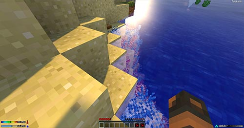
En bas à gauche du screenshot, vous pouvez voir votre indicateur d'hydratation.
Vous pouvez boire depuis n'importe quelle source d'eau en cliquant droit avec une main VIDE sur le côté immergé d'un bloc solide, comme sur le screenshot.
Il y a 4 différents types d'eau:
- L'eau normale (water) qui ne fait rien de plus que vous hydrater.
- L'eau salée (salt water) qui vous déshydrate. (On la trouve dans les océans.)
- L'eau sale (dirty water), qui a une chance de vous donner "Hunger" et parfois de vous empoisonner.
(Présente dans les marais, cavernes, ou parfois quand l'eau est verte. Embouteillez-la et mettez là au
four pour la rendre pure.)
- Et l'eau froide (cold water) qui diminue votre température. (Peut-être craftée avec une bouteille d'eau et une boule de neige, mais on la trouve dans les biomes froids.)
Attention ! Lorsque vous mangez, plus l'aliment vous remplit, plus longtemps vous serez déshydraté. Vous ne pouvez donc pas manger partout, n'importe quand. Prenez votre temps pour un bon repas, avec une source d'eau potable non loin. Vous pouvez aussi boire/porter de l'eau avec les fioles en verre ou même crafter un "camel pack" :

Température
 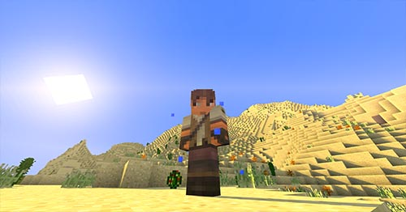
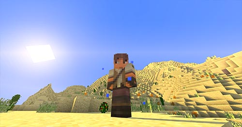
Le nombre à côté de la barre de température est celle de votre CORPS. Tandis que les marqueurs noirs indiquent la température AMBIENTE.
La température de votre corps évolue en fonction de celle ambiante et si vous êtes suffisamment hydraté, votre corps tentera de vous protéger des températures trop hautes, mais vous vous déshydraterez 2 fois plus vite.
Si la température de votre corps devient inférieure à 35°C, vous rentrerez en hypothermie.
Si la température de votre corps devient supérieure à 38°C, vous commencerez à transpirer. Sur le screenshot, vous pouvez voir que je transpire dans ce désert : les petits carrés bleus autour de mon personnage.
Et si vous dépassez 39°C vous aurez le statut "heat stroke" (Coup de chaleur).
L'hypothermie et le coup de chaleur peuvent mener à divers handicaps puis, à la mort. Tandis que transpirer vous déshydratera 2 fois plus vite. Fabriquez-vous donc un set d'armures en fourrure avant de construire un igloo dans les contrées froides et enlevez là près de la lave ou dans les déserts.
Fatigue
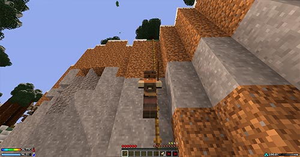
La fatigue est ajoutée par le smartmoving mod. Suivez ce lien pour voir les possibilités que ce mod offre comme s'accrocher, glisser, escalader et bien plus encore.
Cette barre n'apparaît que quand vous faites des actions fatigantes comme sauter. Elle se trouve juste au-dessus de votre barre de faim.
Sur le screenshot ci-dessus, vous pouvez me voir grimper une corde que je viens juste de lancer, pour m'échapper d'une ravine. cela utilise la fatigue rapidement, mais vous pouvez "sneak" quand vous voulez pour vous reposer et retrouver vos points. Sinon c'est la chute.
Pour chaque éclair utilisé, votre faim sera fortement affectée. Conservez donc votre énergie s'il ne vous reste pas beaucoup de nourriture.
Remarquez que si votre barre de fatigue est vide, vous ne pourrez même plus sauter. Heureusement, elle se remplit entièrement en 3 à 5 secondes si vous n'êtes pas "Starving" (mourant de faim).
Oxygène
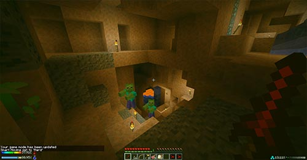
La barre d'oxygène s'affiche en bas à droite de votre écran. Elle n'a aucune influence ou lien avec les petites bulles utilisées sous l'eau.
Soyez toujours attentif quand vous vous enfoncez profondément. À un certain point, l'oxygène se fait rare, et votre barre commencera à descendre. Votre écran deviendra verdâtre et flou pendant que vous suffoquez (voir screenshot).
Pour info : Il n'y a pas d'oxygène dans le Nether. Donc, pour survivre dans un tel endroit, il existe quelques solutions. Vous pouvez creuser un puits d'un bloc de large qui remonte tout droit à la surface, ce qui fonctionne mais est très long comme les blocs sont 10 fois plus durs. Mais vous pouvez aussi utiliser des feuilles. Elles sont une bonne source d'oxygène, même s'il vous en faudra beaucoup. Faire pousser un arbre est la solution la plus rapide, si possible.
Compétences et niveaux
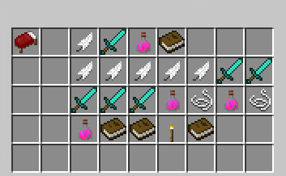
Les compétences peuvent aider, et ajoutent un aspect RPG à Minecraft. Je les ai créées plutôt pour le fun et il reste beaucoup de travail à faire dessus. Prenez-les comme une option sympa plus que comme une vraie, et définitive part du gameplay.
La barre de niveaux classique qui se trouve au-dessus de votre barre d'accès rapide n'a aucun lien et ne montre pas votre vrai niveau. Elle est simplement utilisée pour les enchantements. Pour voir votre vrai niveau, ou toute autre information relatée comme vos points de compétences ou d'XP, voir les commandes plus bas.
Vous commencez en tant que simple survivant, avec une vie maximum de 6 coeurs, et gagnerez un demi-coeur pour chaque niveau passé. Vous commencez avec 4 points de compétence, et en gagnez 2 à chaque niveau. Dépensez-les bien, un point de compétence utilisé ne peut être récupéré.
Chacun peut prendre gratuitement la compétence appelée "Rest" (Repos). Elle vous "Root" (enracine) pendant 15 secondes, cela signifiant que vous ne pouvez pas bouger durant cette période. Une fois ce temps écoulé, vous aurez "Speed I" pour un moment et commencerez à vous régénérer.
Vous avez 4 traits principaux : Agilité (Plume), Combat (Epée en diamant), Soin (Potion de soin) et Connaissance (Livre), que vous pouvez voir sur le screenshot, sur la même ligne que le lit. Chacune des autre compétences ne peut être qu'apprise si vous avez le nombre de points nécessaires dans le trait correspondant. Chaque trait est lié avec 4 ou 5 compétences qui peuvent être maxées à 5 chacune.
Sur le screenshot, vous pouvez voir 5 plumes, étant les 5 compétences d'agilité et 5 épées pour les compétences de combat. Ensuite, il y a 5 compétences de soin représentées par des potions et des ficelles. il ne devrait y avoir que des potions, mais quand il y a une corde, c'est qu'il vous faut tenir une corde dans votre main pour lancer le sort. De même pour les 4 compétences de Connaissance, où l'une requiert une torche pour être lancée.
Au niveau 8 il est possible de choisir entre 3 classes : Mage, Hunter (Chasseur) ou Master (Maître). cela vous donnera 2 nouveaux traits en fonction de votre classe. Le "Mage" a "Pyro" (feu) et "Mentalism" (mentalisme), avec une santé max de 18 PVs. Le "Hunter" a "Traps" (pièges), "Archery" (archerie), et 20 PVs. Et le "Master" a "Weapons" (armes), "Movement" (Mouvements de ninja) et 22 PVs. Le niveau maximum accessible est de 15 pour le moment.
Liste des commandes (À taper dans le chat):
- /class info : Affiche toutes les informations en relation avec les compétences comme votre niveau, votre expérience, vos points de compétence restants etc.
- /class skills : Affiche votre arbre des compétences. C'est là que vous pouvez dépenser vos points et apprendre de nouvelles compétences en cliquant dessus.
- /class options : Cette commande affiche les noms des classes disponibles que vous pouvez prendre.
- /class profess [nom de la classe] : Au niveau 8, faites cette commande pour choisir votre classe.
Bois
") 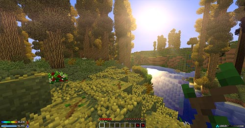
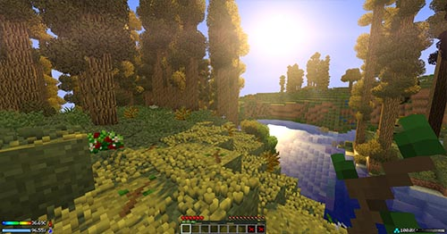
Bien sûr, ce n'est pas la peine d'essayer de couper du bois à la main, cela ne fonctionne pas. Pour trouver votre première source de bois, il vous faudra casser des blocs de feuilles, qui dropperont éventuellement des branchages (twigs). Vous pouvez aussi en trouver sur le sol dans certains biomes, comme sur le screenshot, ce qui est beaucoup plus rapide à récolter.
Les branches peuvent être transformées en bâtons et 2 bâtons côte à côte vous donneront une planche. Attention, certaines feuilles ne donnent pas de bâtons (Si vous avez les shaders installés, ce sont celles qui ne bougent pas.).
Remarquez aussi qu'une planche, entourée par des bâtons, dans votre table de crafting, vous donneront 8 blocs du charpentier ce qui est tout à fait viable :
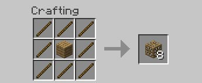
Une fois en possession d'une hache, vous verrez qu'en coupant un arbre, il tombe entièrement en bûches. Le temps nécessaire dépend de la hauteur de l'arbre au-dessus de votre hache. cela peut être très (très) long. N'essayez donc pas de couper un arbre géant avec une hache en bois. Vous pouvez toujours prendre une seule bûche en maintenant "Sneak" appuyé en coupant si vous voulez aller plus vite.
Outils de pierre

Dans la table de crafting de base, vous ne pouvez faire que des outils en bois. Ceci ne s'applique pas pour les bêches, les épées vanilla et les armes non-vanilla faites dans la table de crafting (comme le "warhammer" (marteau de guerre), le katana...).
Pour faire des outils de pierre, il vous faudra utiliser les mécaniques de Tconstruct. Il vous faut 3 tables, fabriquées en plaçant un "blank pattern" (modèle vide) au-dessus d'une planche, d'une bûche ou d'une table de crafting. Voici un petit tuto sur comment faire votre première pioche en pierre. (La tête de la pioche doit être faite en pierre, mais le reste peut être fait de n'importe quel matériau.)
Comment faire vore première pioche en pierre
| 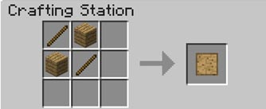 |
La première chose à savoir, est comment faire un "blank pattern". il vous faut 2 bâtons et 2 planches. Vous aurez besoin d'au moins 6 patterns. |
 |
Placez un blank pattern sur une planche, pour obtenir une "Stencil table". Elle sert à donner une forme à vos "blank patterns (les trouer) (voir plus bas). |
 |
Avec une bûche, vous aurez le "Part builder". Utilisé pour crafter des morceaux d'outils en utilisant des patterns troués. |
 |
Avec une table de craft, vous aurez la "Tool station". Utilisée pour crafter vos outils finis avec les morceaux d'outils. |
 |
Ouvrez votre "Stencil table" et placez-y un blank pattern. Cliquez ensuite sur "Next pattern" jusqu'à trouver les composants (morceaux d'outils) suivants : une "pickaxe head" (tête de pioche), un "tool binding" (attache d'outil) et une "tool rod" (manche d'outil). Vous venez de donner forme à (trouer) vos premiers patterns ! |
| 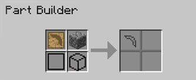 |
Allez dans votre "Part builder" prenez l'un de vos patterns troués et placez-le dedans. Ensuite, placez également le matériau de votre choix dans la table, seule la tête de pioche doit être faite de pierre. Faites la même chose pour les 2 patterns troués restants. Vous devriez vous retrouver avec 3 morceaux de pioche différents. |
| 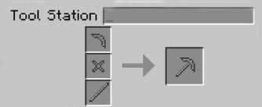 |
Enfin, vous devez simplement aller dans votre "Tool station" et soyez sûrs de bien sélectionner "pickaxe" dans le menu de gauche. Placez vos 3 composants, puis prenez votre pioche en pierre toute neuve. |
 |
Optionnellement, vous pouvez faire un "Pattern chest" (Coffre à patterns). Placez-le juste à côté de la "Stencil table" pour pouvoir voir son contenu lorsque vous l'ouvrez. Ce coffre ne peut contenir que des patterns troués. |
Vous n'avez besoin de crafter chaque pattern qu'une seule fois. Sachez que les outils fabriqués ainsi ne disparaissent pas une fois cassés ! Placez juste l'outil abîmé dans la "Tool station" et placez à côté le même matériau que vous avez utilisé pour la tête pour le réparer.
Allez voir le wiki de Tinker's construct pour en savoir plus et découvrir tous les matériaux que vous pouvez utiliser pour faire des otuils, comme le papier, le cactus...
Feux de camp

Si vous ne voulez pas passer votre nuit dans l'obscurité, vous allez avoir besoin de feu. Mais ne vous embêtez pas à faire une pioche et à trouver du charbon pour faire des torches. Il est maintenant possible de faire un feu de camp avec 5 bâtons, un silex et une base de feu de camp en pierre :
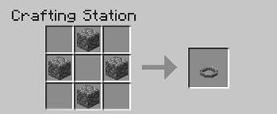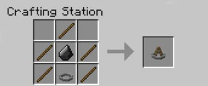
Évidemment, vous aurez toujours besoin d'une pioche pour obtenir la pierre de la base, mais vous pouvez le faire dans votre cachette à la fin de la journée. De plus, vous pouvez rechercher du silex dans le gravier : vous n'avez besoin de 4 blocs de gravier et de les placer dans votre table de crafting en un carré de 2 par 2. Je recommande ce feu grandement pour passer une première nuit bien éclairée.
Si vous voulez vraiment, vous pouvez toujours essayer de trouver du charbon pendant le premier jour, mais je pense que cela ne vaut pas le coût, étant donné que le charbon est très long à casser (bien que que le charbon soit le seul moyen de cuire de la viande sans four). En passant, vous pouvez cuire la viande avec vos torches, même si c'est un peu gâché.
Le feu de camp décoratif est le plus éloigné sur le screenshot en haut de l'article. C'est un feu de camp décoratif car il ne sert qu'à fournir de la lumière et de chaleur, mais comme il n'utilise pas de charbon, il est un peu faible et ne peut cuire aucune nourriture.
Vous aurez besoin d'un plus performant : les 3 autres sur le screenshot. Une fois placé, le seul moyen de l'enlever est avec un "pocket knife" (couteau de poche). L'avantage principal de ce feu de camp , est que vous pouvez y placer des colorants, pour profiter d'effets variés... Essayez !
Vous pouvez cuire de la nourriture avec les feux de camp, mais il vous faudra au moins 19 "iron nuggets" (pépites de fer) (soit 2 lingots et 1 nugget). La première chose requise est la "campfire base". La même que pour le "decoration campfire". Mais au lieu de l'utiliser dans une recette, il vous faut la placer au sol.
Ensuite, un kit est nécessaire pour faire cuire. Faites d'abord un kit vide comme ceci :
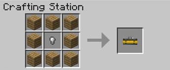
Après, vous devez mettre des items particuliers dedans pour le rendre utilisable. Faites clic droit avec un kit vide pour l'ouvrir. Vous pouvez faire 3 types de kits différents, du moins au plus avancé :
- Le spit kit (rôtissoire) : Mettez 1 bâton de fer et 2 en bois dans un kit vide pour en faire un "spit kit". Il peut cuire deux items à la fois mais seulement le poulet. (Le plus éloigné sur le screenshot après le "decoration campfire".)
- Le grill kit (kit de grillades) : Mettez des barres de fer (iron bars), 2 bâtons de fer 4 en bois. Peut cuire 4 items à la fois.
- Le pan kit (kit avec casserole) : Mettez une casserole (pan), une ficelle (string), 2 bâtons en bois et un en fer. Peut cuire 8 items à la fois.
Maintenant, vous n'avez plus qu'à cliquer droit sur la "campfire base" et à mettre le kit dedans : voilà votre premier barbecue ! (Requiert du charbon.)
Cuisine

La plupart des items de nourriture classiques ne donnent pas beaucoup de points. Une côtelette de porc par exemple, même cuite, ne vous donnera pas plus de 2 points de faim (1 icône) et presque toutes les baies/fruits ne vous en donneront qu'un (demi-icône). Pour ne pas arriver en pénurie de nourriture, il va vous falloir cuisiner assez rapidement.
Certains items comme les burgers, les pizzas ou les "footlong" sandwiches (sandwich de 30 cm), peuvent restaurer presque toute votre faim. si vous voulez apprendre à cuisiner ces plats délicieux, l'une des meilleures solutions est de se référer au Guide de crafting. Cependant, il existe un grand nombre de types de nourriture, voici donc quelques astuces pour bien débuter.
Voici les 3 ustensiles principaux dont vous aurez besoin :
| Mixing bowl (Bol de mélange) : |
 |
| Iron pot (Pot en fer) : |
 |
| Cutting board (Planche à découper) : |
 |
Je recommande le craft de ces 3 outils aussi tôt que possible. Car ils vous permettent de crafter 2 recettes de base qui sont extrêmement utiles :
| La salade de fruits : |
 |
En sachant qu'un fruit ne donne qu'un point de faim (demi-icône), et que la salade vous en donne 3, avec 2 fruits, vous pouvez déduire que vous gagnez un point en faisant cela. Ce n'est pas tant mais ça vaut le coup. Vous pouvez soit ajouter la planche à découper dans la recette, ou alors la poser par terre (comme sur le screen en haut de l'article), cliquer droit dessus et faire la recette dedans. (Marche avec n'importe quel fruit.) |
| Le stock : |
 |
Le stock vous donne 3 fois le montant de nourriture avec lequel vous avez fait la recette. Vous devriez faire cette recette le plus souvent possible. Vous pouvez même l'améliorer en rajoutant des ingrédients. (Marche avec n'importe quel légume.) |
Et voici les ustensiles restants, tout aussi utiles plus tard :
| Mortar and pestle (mortier et pilon) : |
 |
| Skillet (poêle) (ne passe plus par-dessus la recette du katana) : |
 |
| Saucepan (saucier) : |
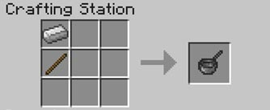 |
| Bakeware (moule) : |
 |
| Juicer (pressoir) : |
 |
Élevage

Élever des animaux n'est pas si différent que dans Minecraft vanilla. Mais souvenez-vous de toujours poser des torches ! Autrement votre bétail disparaîtra.
Aussi, même si c'est assez rare, attention aux tornades qui pourraient les emporter pour toujours. Pour savoir comment élever chacun des animaux, allez sur le wiki de Mo'Creatures
Agriculture

 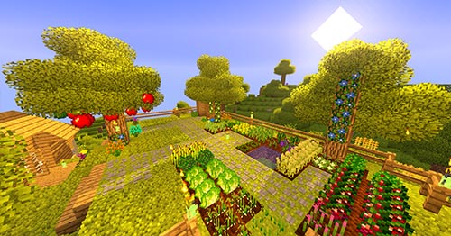
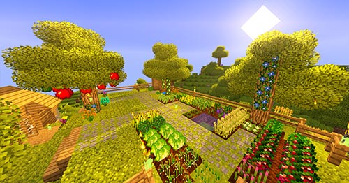
Beaucoup de choses peuvent être cultivées et apprendre lesquelles sont utiles peut prendre du temps. Allez sur le wiki de Harvestcraft si vous avez besoin de plus d'informations.
Pour labourer la terre, il faut de l'eau à proximité, au même niveau que celui auquel vous utilisez votre bêche. Toujours cliquer droit sur vos cultures une fois matures. Même dans la nature, vous devriez toujours cliquer droit sur les buissons de baies ou autres avant de les casser. Vous pouvez planter presque n'importe quel fruit ou légume sur un bloc de terre labouré, sans avoir besoin de graines même si vous en obtiendrez presque toujours en le plaçant dans votre table de crafting.
Voici la recette pour faire une pousse d'arbre fruitier. Elle marche avec n'importe quel fruit, mais le type de pousse (sapling) requit peut être différent selon le fruit :
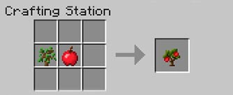
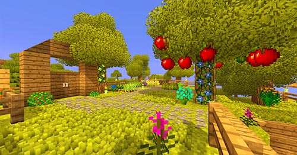
Si vous petes perdus parmis toutes les graines droppées par l'herbe, souvenez-vous de certaines qui sont très utiles, comme le "soybean" (soja), qui remplace les oeufs dans toutes les recettes en en faisant du "firm tofu". Les tomates et la laitue sont utilisées dans beaucoup de recettes. Et avec un "garlic" (ail) et une "eggplant" (aubergine) vous pouvez faire des "stuffed eggplants" (aubergines farcies) qui sont peu chères et valent le coût.
Pêche
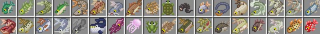
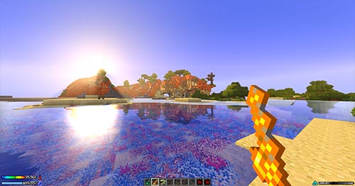
Pêcher avec la canne en bois n'a pas changé, bien qu'il y ait de nouvelles cannes à pêche grâce à Aquaculture. La canne en fer est désactivée car très cheatée, mais il est toujours possible de faire celles en or et en diamant.
Recettes des cannes à pêche en or et diamant :
| 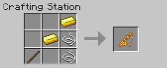 |
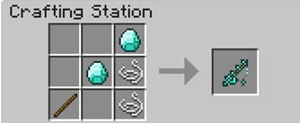 |
Normalement, vous pouvez faire des "fish fillets" (fillets de poisson) avec les nouveaux poissons que vous pêchez, mais c'est un peu différent dans GSP : les "fish fillets" sont désactivés.
La plupart du temps, il vous faudra mettre 2 fois le même type de poisson dans la table de craft. cela vous donnera un ou plus de poissons crus classiques. (Qui peuvent remplacer les "fish fillets" dans toutes les recettes !)
Exemples de craft de poisson cru :
 |
Si vous mettez ce poisson dans votre table, vous ne pourrez pas prendre les "fish fillets" comme ils sont désactivés. |
| 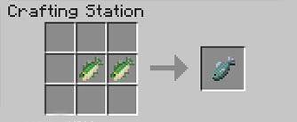 |
Il vous faut donc mettre 2 de ces poissons pour avoir un poisson cru classique. |
| 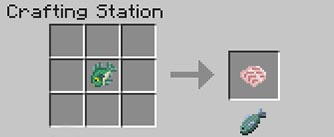 |
Mais il y a des exceptions. Le Bluegill par exemple, vous donnera un poisson cru avec un seul item. Un "fish fillet" peut être affiché, mais quand vous cliquerez dessus, il deviendra un poisson cru classique. |
Le type de poisson attrapé dépend du biome dans lequel vous pêchez. Les océans sont l'endroit où vous aurez les plus gros qui vous donnent plus de poisson cru.
Vous pouvez aussi tuer les poissons que vous voyez dans l'eau avec votre épée ou une "spear" (lance) par exemple.
Obtenir du fer/Four
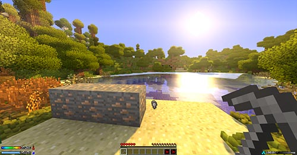
C'est l'un des changements les plus importants dont vous devez avoir conscience. La recette classique du four est désactivée. Il y a un nouveau moyen de le crafter, avec de la cobblestone, un "decoration campfire" et des plaques de pression en de fer :

"Mais comment obtenir des lingots de fer sans four ?" vous demandez-vous. C'est simple, quand vous casser un bloc de minerai de fer avec une pioche en pierre ou une pioche Tconstruct, il a une chance de se briser en 3-6 "iron nuggets" (pépites de fer) (voir screenshot). Avec 9 pépites vous pouvez faire un lingot. Il vous faudra donc poser votre minerai au sol et le casser plusieurs fois (le travailler), jusqu'à ce qu'il se casse en pépites.
En passant, avec cette quantité de zombies la nuit, ils ont de grandes chances de dropper des lingots de fer à leur mort.

Étant donné que les blocs sont 10 fois plus durs à casser, vous allez sûrement vouloir des outils efficaces le plus rapidement possible. Malheureusement, vous ne pouvez faire que des outils en bois dans la table de craft et en pierre avec les tables Tconstruct. Pour faire des outils plus avancés, vous aurez besoin d'une forge multi-blocs, alimentée par de la lave.
Comment faire la forge multi-block
 |
La première chose à savoir, c'est comment faire du "Grout" (mastique). Il est fabriqué à partir de 1 gravier, 1 sable et 1 boule d'argile. |
 |
Mettre du "grout" au four vous donnera une "seared brick", composant essentiel de toute la forge. il vous en faudra au moins 84 pour la construire. |
 |
Mettre 4 "seared bricks" dans un carré de 2x2 craftera un "seared brick block", utilisé pour la vraie structure de la forge. |
| Une fois des "seared brick blocks" en votre possession, vous pouvez commencer. Il faut d'abord faire une base en un carré de 3x3 en seared brick blocks (placé habituellement dans le sol). |
 |
| Ensuite, vous devez construire les murs, qui sont faits de "seared brick blocks" également. La base n'est pas entièrement entourée, 2 blocs sont laissés vides, pour placer un "smeltery controller" et un "seared tank". |
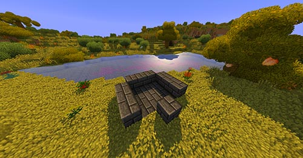 |
 |
Voici comment crafter le "seared tank". il est utilisé pour contenir la lave qui alimente la forge. Remplissez-le en cliquant droit avec un seau de lave. |
 |
Et voici la recette du "smeltery controller". Cliquer droit dessus vous permet de placer les blocs et objets que vous voulez faire fondre. |
| Maintenant, placez les 2 blocs précédents dans leurs emplacements libres. Si vous avez fait les choses bien, le "smeltery controller" devrait être allumé. |
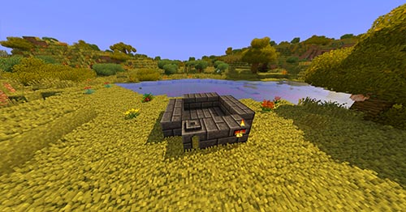 |
| 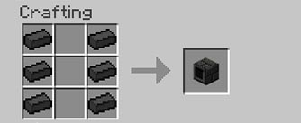 |
Ceci est le "Drain block". Ce drain permet de verser les métaux liquides hors de la forge... |
 |
...mais il est inutile sans le "faucet" (robinet) placée sur sa face frontale. |
| Voici à quoi ça peut ressembler. Placez le drain et son robinet sur n'importe quel mur. |
 |
 |
Une dernière chose : la "casting table". Il serait dommage que votre métal fondu se répande partout sur le sol. Elle doit être placée juste sous le robinet. |
| Remplissez simplement le "seared tank" avec un seau de lave, et c'est parti ! La forge est prête à l'emploi. Vous pouvez mettre des "seared glass" au lieu des "seared brick blocks". C'est autorisé, et vous pouvez voir à travers sans vérifier dans le "smeltery controller". |
 |
| Maintenant, nous allons faire une partie d'un outil. Disons une tête de pioche par exemple. Il vous faut un "blank pattern" fait en "aluminum brass". L'"aluminum brass" est un alliage, et le seul matériau utilisé pour faire des patterns. Car bien sûr, un en bois serait juste réduit en cendres. Tout d'abord, pour faire cela, cliquez droit sur la "casting table" avec une tête de pioche en pierre, pour la placer. |
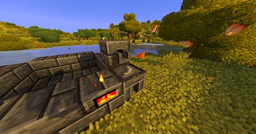 |
| Puis, placez 1 "copper ore" (minerai de cuivre) et 3 "aluminum ores" (minerai d'aluminium) dans votre "smeltery controller". C'est le ratio requis pour faire l'alliage dont nous avons besoin : l'"aluminum brass". une fois fondu, cliquez droit sur le robinet ! |
 |
Maintenant que vous avez un pattern en "aluminum brass", placez-le dans la "casting table", et versez le métal de votre choix dedans pour faire la pioche de vos rêves. cela fonctionne de la même manière pour n'importe quelle partie d'un outil.
Pour en apprendre plus sur tout ça, allez sur le wiki de Tinkers' construct.
De même ici, les outils faits de cette manière ne disparaissent pas quand cassés. Réparez-les avec votre "tool station".
Monstres
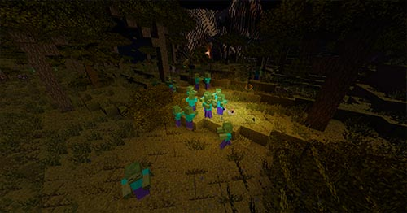
Les ennemis principaux du jeu sont les zombies. un grand nombre d'entre eux apparaissent la nuit, mais d'autres sont encore plus dangereux, car ils cassent les blocs ou sont très forts et rapides.
Zombies : Les zombies sont très nombreux, ils ont une chance minime de dropper des os, ils sont plus malins qu'avant, regardez -les attirés par la lumière sur le screenshot. Ils entendent aussi les bruits, sentent vos traces de sang, grimpent aux échelles...
Creepers : ils sont les mêmes mais ont une petite chance de dropper un creeper chargé quand tués. Faites attention !
Squelettes : Ils sont très rares dans GSP. Mais peuvent avoir des compétences particulières comme le tir rapide, les flêches empoisonnées et autres.
Monstres de Mo'creature : Je ne voulais pas des tonnes de monstres incohérents c'est pour cela que la plupart d'entre eux sont désactivés. Ceux qui restent dans l'overworld sont principalement les Ogres, les Golems, les Wraithes (fantômes), les Scorpions, les Loups-garous et très rarement des Silver skeletons. Allez sur le wiki de Mo'Creatures pour en savoir plus.
Le premier jour
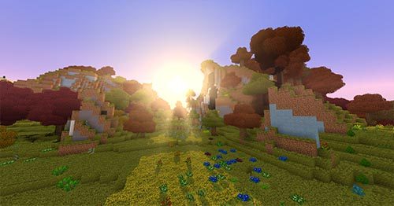
Ici votre aventure débute. Vous venez d'arriver dans un tout nouveau monde aux mille dangers et mystères. Beaucoup de choses changent comparé à Minecraft vanilla (comprendre Minecraft sans mods).
Changements notables de gameplay au début :
- Tous les blocs sont 10 fois plus durs a casser. Donc ne vous retrouvez pas coincé dans un trou sans l'outil adéquat !
- Si vous mourez, vous perdez tout ce que vous avez sur vous ! Cependant, si vous transportez un sac à dos dans le slot prévu à cet effet (Sneak+B pour ouvrir) il sera droppé au sol pour que vous puissiez le récupérer. Vous dropperez aussi un zombie, donc surveillez vos amis !
- Vous commencez avec 6 coeurs, mais augmenterez en montant les niveaux. La barre d'expérience standard pour les enchantements n'a aucun lien. Il faut enter "/class info" dans le chat pour connaître votre niveau.
- Vous ne pouvez pas porter plus de 7 items sur vous, et ils ont un certain poids, ne prenez donc pas n'importe quoi avec vous, sous peine d'être ralenti.
- Vous ne pourrez pas crafter le four, ou des outils en pierre/métal de manière classique.
(Crafter le four | Forge à métaux | Recettes désactivées)
- Vous voudrez certainement savoir comment faire tous les objets possibles. Vous pouvez faire un guide de crafting comme suit :
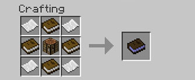
Commençons ! Premièrement, tapez "/class skills" dans le chat et prenez la compétence gratuite "Rest". Elle peut être utile si vous prenez des dommages, ce qui arrivera certainement. Ne perdez pas de temps à dépenser vos points au départ, vous aurez toute la nuit pour le faire.
La chose la plus importante, comme d'habitude, c'est de trouver du bois. Si vous êtes chanceux, quelques branches couvriront le sol ce qui est rapide à récolter. Mais sinon, vous pouvez casser des feuilles (Celles qui bougent lorsque vous avez les shaders).
J'aime assez rassembler exactement 31 branches. C'est un peu long, mais cette quantité vous permet de crafter les choses suivantes :
- Si vous ne voulez pas vous ennuyer à trouver du charbon qui est long à récupérer, et vous oblige à poser votre table de craft au sol pour faire une pioche, vous pouvez utiliser le decoration campfire. Il nécessite une base faite de 4 blocs de cobblestone. C'est pourquoi vous aurez toujours besoin d'une pioche, mais vous pouvez le faire à la fin de la journée dans votre abri. Et comme une planche se fait avec 2 bâtons, vous aurez besoin de 8 bâtons pour la pioche. Ensuite, le feu de camp lui-même en requiert 5 de plus. Donc 13 en tout pour le feu de camp.
- J'aime également assez utiliser les blocs du charpentier pour construire/améliorer mon premier abri rapidement sans perdre de temps à creuser. C'est plutôt viable, puisque avec une planche entourée de 8 bâtons (=10 bâtons), vous obtenez 8 blocs du charpentier. 3 de plus que les 5 planches que vous auriez faites avec ces 10 bâtons.
- Vous avez aussi évidemment besoin de 8 bâtons pour une table de crafting.
- Nous avons donc : 13 bâtons pour le feu de camp/pioche, 10 pour les blocs du charpentier (optionnel), et 8 pour la table, pour un total de 31 bâtons (ou 21 sans les blocs du charpentier).
Ok ! Maintenant que vous avez le bon nombre de bâtons, si vous voulez un feu de camp fonctionnel, il vous faut un silex. Trouvez 4 graviers et placez-les en un carré de 2 par 2 dans la table de craft.
Pendant que vous explorez, récoltez tous les buissons de baies et fruits que vous trouvez sur le chemin (toujours essayer clic droit d'abord), car tuer les animaux sans arme n'est pas viable selon moi.
L'environnement peut vous tuer très vite si vous n'avez aucune expérience. Attention aux plantes empoisonnées dont il existe 5 different types. Apprenez à les reconnaître. La "Poison Ivy" est la plus dangereuse car totalement verte et échappe souvent au regard. Vous pouvez faire des poisons avec chacune d'entre elles au passage. Faites attention aux animaux sauvages certains sont moins amicaux que ce que vous croyez.
Durant l'exploration, essayez de faire les actions qui font apparaître la barre de fatigue, le moins possible. Même nager fait descendre votre faim plus vite. Ne mangez pas n'importe où, n'importe quand car vous serez déshydraté pendant un certain temps. Surveillez aussi toujours votre température et votre soif, qui peuvent vous surprendre et vous tuer avant que vous ne compreniez ce qui se passe.
Si vous avez réussi à trouver vos bâtons, 4 graviers, un peu de nourriture et s'il fait toujours (à peu près) jour, la première nuit ne devrait pas être trop un problème. Et bien sûr, essayez d'avoir une source d'eau potable à proximité que vous pourrez atteindre facilement au petit matin.
Recettes interdites/spécifiques

Les recettes désactivées dans GSP
|
 |
La recette classique du pain était trop facile et non RP. Il faut maintenant crafter de la pâte ("dough") et la mettre au four. |
| 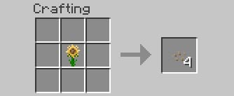 |
Les graines de tournesol de Biome O' Plenty étaient cheatées. On ne peut donc plus les crafter, mais il y a un autre moyen d'en obtenir dans la section "recettes spécifiques" plus bas. |
  |
La recette classique du four est désactivée pour rendre son obtention plus difficile. Voir la recette dans la section plus bas. |
| 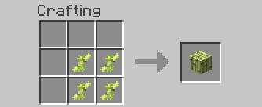 |
Le bambou spawn en grande quantité quand vous en trouvez. Il est très rapide à casser et cela rendait les planches trop faciles à avoir. Il est tout de même possible de faire des bâtons avec le bambou (section plus bas). |
|
Comme les nouvelles cannes à pêche attrapent le poisson très vite, les "fish fillets" sont désactivés. Il vous faut mettre plusieurs poissons du même type ensemble pour avoir du poisson cru classique. Voir la section pêche. |
 |
Le sac à dos du camping mod est désactivé car il peut porter bien trop de choses et n'est pas configurable. |
 |
Les enveloppes sont désactivées car elles vous permettent de porter 2 fois plus d'items que la normale. |
| 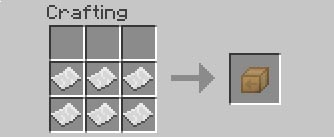 |
Pareil pour les packages. Mais 6 fois... |

Les recettes spécifiques à GSP !
|
 |
En mettant à côté 2 de ces grands tournesols, vous obtiendrez des graines adaptées à GSP. |
| 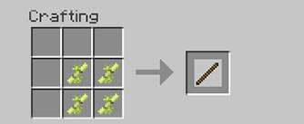 |
Voilà comment obtenir du bois à partir des bambous. 4 pour un bâton peut paraître beaucoup mais le bambou reste le moyen le plus rapide pour obtenir du bois. |
| 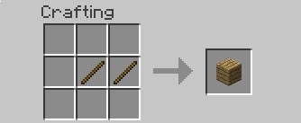 |
Voici comment faire des planches avec des bâtons. |
 |
Cherchez dans le gravier pour trouver du silex ! |
 |
Récoltez le lierre que vous trouvez sur le sol ("ivy"). Vous pouvez en faire de la ficelle ! |
 |
Vous pouvez faire une gourde en cuir pour porter de l'eau. Quoi ? C'est en verre ? Non, non c'est fait en cuir ! |
| 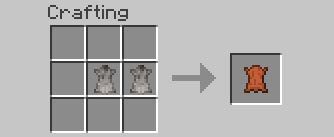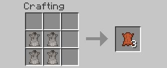 |
Faire du cuir avec de la fourrure. |
 |
Qui a dit que crafter une laisse nécessitait des slime balls ? Maintenant le cuir peut les remplacer. |
 |
La toile ("canvas") est habituellement faite à partir de chanvre. Mais voici un autre moyen d'en faire. |
| 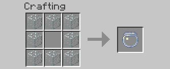 |
La recette des aquariums ("Fishbowls") était réécrite par la recette des jarres de poison vides. C'est corrigé. |
| 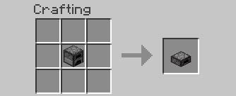 |
Faites de votre four un demi-four de la même manière que les tables. Car la recette normale pour faire ça aurait rendu la nouvelle recette du four inutile. |
 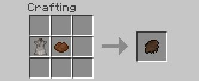 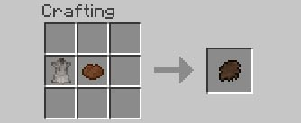 |
Les fourrures de Mo'creatures et du camping mod sont maintenant compatibles ! Vous n'avez besoin que de colorant blanc ou marron. |
 |
La recette du katana était ré-écrite par la poêle. C'est toujours le cas, mais le secret, c'est de crafter le katana à l'envers. |
   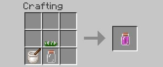 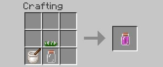 |
Vous pouvez faire des jarres de poison (de Biomes o plenty) avec les plantes empoisonnées que vous trouvez dans la nature (du plant mega pack), en utilisant un mortier et pilon (d'harvestcraft).
N'est-ce pas génial ? 3 mods différents qui fonctionnent ensemble.
Remarquez aussi que la "poison ivy" ne requiert pas le mortier et pilon.
|
| 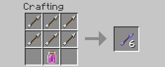 |
Ensuite il ne vous faut plus que placer vos flèches dans une jarre pour les empoisonner. Placez simplement 4 à 8 flèches autour de la "poison extract jar". |
 |
Ici, Balkon's weapons mod fonctionne avec le plant mega pack. Vous pouvez crafter les darts comme d'habitude, mais en utilisant n'importe laquelle des plantes précédentes. |
 |
Vous pouvez maintenant cuire presque toutes les viandes avec vos torches. cela nécessite deux fois plus de charbon qu'avec un four, donc ne le faites pas trop. Mais ça peut toujours être utile parfois. |
|
Voici comment faire un four dans GSP. Voir la section Obtenir du fer/Four pour en savoir plus. |
Bugs connus
Voici les problèmes et bugs que vous pourrez rencontrer en jeu. Pour le reste, et plus de solutions veuillez consulter la F.A.Q.
Crashes serveur. oui cela arrive parfois, mais redémarrer simplement le serveur suffit, et vous ne devriez avoir aucune corruption du monde ou autres bugs à venir avant un moment.
Certaines haches ne sont pas ajoutées à TreeCapitator et ne coupent qu'une seule bûche à la fois. (Sera corrigé)
Certaines feuilles ne donnent pas de bâtons. Ce n'est pas vraiment un bug, disons que les branches et bûches de certains types d'arbres ne sont pas bons pour construire des choses avec.
Les spawns d'animaux aquatiques sont un peu étranges.
Les mondes océans arrivent toujours.
Vous pouvez ramasser plus de 7 items si vous avez déjà un stack plein du même type d'item que celui que vous ramassez.
Certains coffres souterrains sont vraiment remplis d'items Harvestcraft.
Le rendu du sac à dos est buggé, mais les autres ne peuvent pas le voir.
Le personnage est démembré quand on change de shaders.
Si vous pouvez voir à travers le sol quand des feuilles y sont posées, c'est à cause d'Optifine. Réglez les arbres sur "Fancy" dans les options dans la section "Détails". Ou supprimez Optifine.
Quand vous mourez, les choses suivantes se produisent : au début vous n'avez que 6 coeurs, mais après la mort, vous réapparaîtrez avec tous vos coeurs. La plupart seront vides bien sûr et vous ne pourrez pas vous régénérer complètement. Vous ne serez pas ralenti lorsque vous serez mourant et les autres joueurs vous verront voler et buggé. pour tout résoudre, il suffit de vous déconnecter et de vous reconnecter.
Quand vous passez de la boue à l'eau, votre vitesse reste réduite jusqu'à toucher un sol normal.
La lune passe ses phases rapidement dans une boucle infinie.
Quand vous avez certains statuts comme l'hypothermie, le Smartmoving et Status HUD mods n'affichent plus leurs icônes.
En créatif, si vous placez des blocs en volant, ils peuvent disparaître. Soyez sur le sol ferme avant de placer un bloc.


 Télécharger le guide de survie au format PDF
Télécharger le guide de survie au format PDF


{kind=link}
{kind=link}
{kind=link}
{kind=link}
{kind=link}
{kind=link}
{kind=link}
{kind=link}
{kind=link}
{kind=link}
{kind=link}
{kind=link}
{kind=link}
{kind=link}